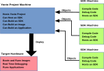

1 Introduzione
1.1 SDK/eSDK Introduction
Welcome to the Yocto Project Application Development and Software Development Kits (SDK/eSDK) manual. This manual explains how to use both the Yocto Project extensible and standard SDKs to develop applications and images.
All SDKs consist of the following:
Cross-Development Toolchain: This toolchain contains a compiler, debugger, and various associated tools.
Libraries, Headers, and Symbols: The libraries, headers, and symbols are specific to the image (i.e. they match the image against which the SDK was built).
Environment Setup Script: This
*.shfile, once sourced, sets up the cross-development environment by defining variables and preparing for SDK use.
Additionally, an extensible SDK has tools that allow you to easily add new applications and libraries to an image, modify the source of an existing component, test changes on the target hardware, and easily integrate an application into the OpenEmbedded Build System.
You can use an SDK to independently develop and test code that is
destined to run on some target machine. SDKs are completely
self-contained. The binaries are linked against their own copy of
libc, which results in no dependencies on the target system. To
achieve this, the pointer to the dynamic loader is configured at install
time since that path cannot be dynamically altered.
Another feature of the SDKs is that only one set of cross-compiler
toolchain binaries are produced for any given architecture. This feature
takes advantage of the fact that the target hardware can be passed to
gcc as a set of compiler options. Those options are set up by the
environment script and contained in variables such as
CC and
LD. This reduces the space needed
for the tools. Understand, however, that every target still needs its own
sysroot because those binaries are target-specific.
The SDK development environment consists of the following:
The self-contained SDK, which is an architecture-specific cross-toolchain and matching sysroots (target and native) all built by the OpenEmbedded build system (e.g. the SDK). The toolchain and sysroots are based on a Metadata configuration and extensions, which allows you to cross-develop on the host machine for the target hardware. Additionally, the extensible SDK contains the
devtoolfunctionality.The Quick EMUlator (QEMU), which lets you simulate target hardware. QEMU is not literally part of the SDK. You must build and include this emulator separately. However, QEMU plays an important role in the development process that revolves around use of the SDK.
In summary, the extensible and standard SDK share many features. However, the extensible SDK has powerful development tools to help you more quickly develop applications. Here is a table that summarizes the primary differences between the standard and extensible SDK types when considering which to build:
Feature |
Standard SDK |
Extensible SDK |
|---|---|---|
Toolchain |
Yes |
Yes [1] |
Debugger |
Yes |
Yes [1] |
Size |
100+ MBytes |
1+ GBytes (or 300+ MBytes for minimal w/toolchain) |
|
No |
Yes |
Build Images |
No |
Yes |
Updateable |
No |
Yes |
Managed Sysroot [2] |
No |
Yes |
Installed Packages |
No [3] |
Yes [4] |
Construction |
Packages |
Shared State |
1.1.1 The Cross-Development Toolchain
The Cross-Development Toolchain consists
of a cross-compiler, cross-linker, and cross-debugger that are used to
develop user-space applications for targeted hardware; in addition,
the extensible SDK comes with built-in devtool
functionality. This toolchain is created by running a SDK installer
script or through a Build Directory that is based on
your metadata configuration or extension for your targeted device. The
cross-toolchain works with a matching target sysroot.
1.1.2 Sysroots
The native and target sysroots contain needed headers and libraries for generating binaries that run on the target architecture. The target sysroot is based on the target root filesystem image that is built by the OpenEmbedded build system and uses the same metadata configuration used to build the cross-toolchain.
However, the extensible and standard SDKs sysroots differ in content:
The standard SDK sysroot only contains libraries and headers for the packages --- and their dependencies --- found in the TOOLCHAIN_TARGET_TASK and TOOLCHAIN_HOST_TASK definitions, for the target and host sysroots respectively.
See Obtaining the SDK to learn how to build it and Customizing the Standard SDK to learn how to customize it.
The extensible SDK sysroot is completely managed by the devtool command-line tool, and its content is the same as the sysroot of the image recipe for which the SDK was built.
See Obtaining the SDK to learn how to build it and Customizing the Extensible SDK standalone installer to learn how to customize it.
1.1.3 The QEMU Emulator
The QEMU emulator allows you to simulate your hardware while running your application or image. QEMU is not part of the SDK but is automatically installed and available if you have done any one of the following:
Setup your Build Host as described in the Setting Up to Use the Yocto Project section of the Yocto Project Development Tasks Manual.
installed the cross-toolchain tarball and sourced the toolchain's setup environment script.
1.2 SDK Development Model
Fundamentally, the SDK fits into the development process as follows:


The SDK is installed on any machine and can be used to develop applications, images, and kernels. An SDK can even be used by a QA Engineer or Release Engineer. The fundamental concept is that the machine that has the SDK installed does not have to be associated with the machine that has the Yocto Project installed. A developer can independently compile and test an object on their machine and then, when the object is ready for integration into an image, they can simply make it available to the machine that has the Yocto Project. Once the object is available, the image can be rebuilt using the Yocto Project to produce the modified image.
You just need to follow these general steps:
Install the SDK for your target hardware: For information on how to install the SDK, see the "Installing the SDK" section.
Download or Build the Target Image: The Yocto Project supports several target architectures and has many pre-built kernel images and root filesystem images.
If you are going to develop your application on hardware, go to the machines download area and choose a target machine area from which to download the kernel image and root filesystem. This download area could have several files in it that support development using actual hardware. For example, the area might contain
.hddimgfiles that combine the kernel image with the filesystem, boot loaders, and so forth. Be sure to get the files you need for your particular development process.If you are going to develop your application and then run and test it using the QEMU emulator, go to the machines/qemu download area. From this area, go down into the directory for your target architecture (e.g.
qemux86_64for an Intel-based 64-bit architecture). Download the kernel, root filesystem, and any other files you need for your process.Nota
To use the root filesystem in QEMU, you need to extract it. See the "Extracting the Root Filesystem" section for information on how to do this extraction.
Develop and Test your Application: At this point, you have the tools to develop your application. If you need to separately install and use the QEMU emulator, you can go to QEMU Home Page to download and learn about the emulator. See the "Using the Quick EMUlator (QEMU)" chapter in the Yocto Project Development Tasks Manual for information on using QEMU within the Yocto Project.
The remainder of this manual describes how to use the extensible and standard SDKs. There is also information in appendix form describing how you can build, install, and modify an SDK.